Solar System
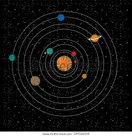 The solar system is a vast and intricate celestial system comprising the Sun and the various celestial bodies bound to it by gravity. At its center, the Sun, a massive ball of glowing plasma, holds sway over the entire system, providing light, heat, and energy to its orbiting planets.The solar system consists of eight recognized planets, arranged in order of their distance from the Sun: Mercury, Venus, Earth, Mars, Jupiter, Saturn, Uranus, and Neptune. These planets, each with its own unique characteristics and features, orbit the Sun in elliptical paths.
In addition to the planets, the solar system includes numerous smaller objects, such as dwarf planets like Pluto, asteroids, comets, and meteoroids, which also orbit the Sun. These smaller bodies can be found throughout the solar system, some clustered in belts like the asteroid belt between Mars and Jupiter or the Kuiper Belt beyond Neptune.
Moons, or natural satellites, also play a crucial role in the solar system's dynamics. Each planet (except for Mercury and Venus) has its own moons, which vary in size, number, and composition. Earth, for instance, has one large moon, while gas giants like Jupiter and Saturn boast dozens of moons, some of which rival small planets in size.
The solar system's formation occurred roughly 4.6 billion years ago from a giant molecular cloud. Over time, gravity caused the material in this cloud to collapse and form a rotating disk, eventually leading to the formation of the Sun and the surrounding planets and other objects.
Studying the solar system provides insights into planetary formation, evolution, and the potential for life beyond Earth. Robotic missions, telescopic observations, and space probes continue to unveil its mysteries, enriching our understanding of the cosmos.
Sun
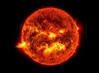 The Sun, at the heart of our solar system, is a dazzling, luminous sphere of hot plasma, primarily composed of hydrogen and helium. It is a colossal, fiery orb, measuring about 1.4 million kilometers (870,000 miles) in diameter, approximately 109 times the Earth's diameter. With a mass of about 330,000 times that of Earth, the Sun contains over 99% of the total mass of the solar system.At its core, temperatures reach a staggering 15 million degrees Celsius (27 million degrees Fahrenheit), and immense pressures result in nuclear fusion reactions, primarily converting hydrogen into helium. This process releases an enormous amount of energy in the form of light and heat, which radiates outwards through the Sun's layers.
The Sun's surface, called the photosphere, emits a brilliant yellow-white light, visible to us here on Earth. Dark sunspots, cooler regions caused by magnetic activity, freckle its surface, along with solar flares and prominences, eruptions of hot gas looping out into space.
Surrounding the photosphere is the chromosphere, a layer of hot, glowing gases, and above that, the corona, the Sun's outer atmosphere, which extends millions of kilometers into space. The corona is visible during a total solar eclipse as a pearly white halo around the darkened disk of the Moon.
The Sun's energy is fundamental to life on Earth, driving weather patterns, ocean currents, and the photosynthesis that sustains plant life. Its magnetic field and solar wind extend far beyond the planets, influencing space weather and cosmic phenomena throughout the solar system.
Despite its vital role, the Sun is just one of billions of stars in the Milky Way galaxy, an ordinary main-sequence star with a lifespan of around 10 billion years. Studying the Sun provides not only insights into its own behavior but also valuable knowledge about the nature and evolution of stars across the universe.
Planet
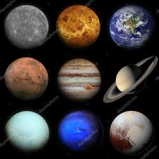 Planets are celestial bodies that orbit stars, including our own Sun, and are distinguished by their gravitational dominance over their orbits, meaning they have cleared their neighboring region of debris. In our solar system, there are eight recognized planets: Mercury, Venus, Earth, Mars, Jupiter, Saturn, Uranus, and Neptune.Each planet has its own unique characteristics, ranging from size and composition to atmosphere and surface features. For instance, Mercury is the smallest and closest planet to the Sun, with extreme temperature variations between its scorching day side and frigid night side. Venus, often referred to as Earth's "sister planet," is similar in size but has a thick, toxic atmosphere shrouded in clouds of sulfuric acid.
Earth, the third planet from the Sun, is the only known planet to support life, boasting a diverse range of ecosystems and a breathable atmosphere. Mars, often called the "Red Planet," has intrigued scientists for its potential to harbor life and its similarities to Earth's geology.
The gas giants—Jupiter and Saturn—are massive planets primarily composed of hydrogen and helium, with thick atmospheres and numerous moons. Jupiter, the largest planet in the solar system, is famous for its Great Red Spot, a massive storm larger than Earth. Saturn is renowned for its spectacular ring system, composed of icy particles and rock debris.
Uranus and Neptune, known as the ice giants, are composed mainly of water, ammonia, and methane. They have unique characteristics such as extreme axial tilts and dynamic atmospheres with winds reaching supersonic speeds.
Beyond our solar system, astronomers have discovered thousands of exoplanets orbiting other stars, ranging from rocky terrestrial worlds to gas giants similar to Jupiter. Studying planets within and beyond our solar system provides insights into planetary formation, evolution, and the potential for habitability elsewhere in the universe.
Mercury
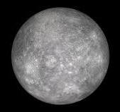 Mercury, the smallest and innermost planet in our solar system, is a rocky world with a fascinating array of features. Named after the Roman messenger god, Mercury is located just 36 million miles (58 million kilometers) from the Sun and completes an orbit roughly every 88 Earth days.Despite its proximity to the Sun, Mercury's surface experiences extreme temperature variations, ranging from scorching hot on its sunlit side to frigid cold on its dark side. During the day, surface temperatures can soar up to 430 degrees Celsius (800 degrees Fahrenheit), hot enough to melt lead. At night, temperatures plummet to around -180 degrees Celsius (-290 degrees Fahrenheit).
Mercury's surface is heavily cratered, resembling the Moon, and is covered in vast plains of smooth volcanic rock, evidence of past volcanic activity. The planet lacks a substantial atmosphere, so there is no significant weather or erosion to erase these features. Its surface is also marked by scarps, or cliffs, indicating that Mercury has experienced significant shrinkage due to the cooling and contracting of its interior.
One of the most prominent features on Mercury is the Caloris Basin, a vast impact crater measuring about 960 miles (1,550 kilometers) in diameter. This immense crater was formed by a massive asteroid impact billions of years ago and is surrounded by rugged, elevated terrain.
Despite its small size, Mercury has a surprisingly large iron core, accounting for about 60% of its mass. This dense core generates a magnetic field, though much weaker than Earth's, which interacts with the solar wind and contributes to the planet's tenuous exosphere.
Mercury has been visited by only one spacecraft from Earth, NASA's MESSENGER mission, which orbited the planet from 2011 to 2015, providing invaluable data and insights into this enigmatic world. Further exploration of Mercury promises to unlock more mysteries about its formation, evolution, and unique characteristics within our solar system.
venus
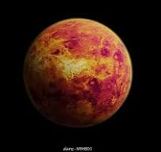 Venus, often referred to as Earth's "sister planet," is the second planet from the Sun and the closest planet to Earth. It shares similarities with Earth in terms of size, composition, and gravity, but it also possesses striking differences that make it one of the most inhospitable places in the solar system.Venus has a thick atmosphere primarily composed of carbon dioxide, with traces of nitrogen and other gases. This atmosphere creates a runaway greenhouse effect, trapping heat and leading to surface temperatures hot enough to melt lead—reaching up to 465 degrees Celsius (869 degrees Fahrenheit), making it the hottest planet in our solar system despite being farther from the Sun than Mercury. The atmospheric pressure at the surface is about 92 times that of Earth, similar to being beneath a kilometer of water.
The surface of Venus is shrouded in thick clouds of sulfuric acid, which reflect a significant portion of sunlight back into space. These clouds completely obscure the planet's surface from visible light observations, necessitating the use of radar imaging to map its terrain. Venus exhibits a variety of geological features, including vast plains, highland regions, and thousands of volcanic structures, suggesting a history of intense volcanic activity.
One of the most notable features on Venus is its lack of tectonic plate movement, leading to fewer earthquakes and a relatively smooth surface compared to Earth. However, the planet's surface is marked by numerous impact craters, indicating a history of asteroid and meteorite bombardment.
Despite its harsh conditions, Venus has fascinated scientists and astronomers for centuries. Understanding the processes that have shaped Venus could provide valuable insights into planetary evolution and the potential for habitability beyond Earth. Numerous missions, including orbiters and landers, have been sent to study Venus, with ongoing efforts to unlock the secrets of this enigmatic world.
Earth
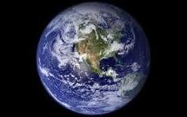 Earth, our home planet, is the third planet from the Sun and the only known celestial body to support life. It has a diverse range of ecosystems, climates, and geological features that make it unique in the solar system.With a diameter of about 12,742 kilometers (7,918 miles), Earth is the largest of the four terrestrial planets and the fifth largest overall. It has a relatively thin atmosphere composed primarily of nitrogen (about 78%) and oxygen (about 21%), with trace amounts of other gases.
Earth's surface is predominantly covered by oceans, accounting for approximately 71% of its surface area. The remaining 29% consists of continents, islands, and other landforms. The planet's surface features a variety of landscapes, including mountains, valleys, plains, deserts, and forests, shaped by geological processes such as erosion, tectonic activity, and volcanic eruptions.
The Earth's atmosphere plays a crucial role in supporting life by regulating temperature, protecting against harmful radiation from the Sun, and providing the oxygen necessary for respiration. The planet's magnetic field, generated by its iron-nickel core, helps shield the atmosphere from the solar wind and cosmic rays.
Earth is also home to a staggering array of biodiversity, with millions of species of plants, animals, fungi, and microorganisms inhabiting its various ecosystems. These diverse life forms interact with each other and their environment, forming complex ecological networks that sustain life on the planet.
Humans, as a species, have had a profound impact on Earth's environment, shaping landscapes, altering ecosystems, and affecting the planet's climate. Understanding and mitigating these impacts are essential for ensuring the long-term health and sustainability of our planet and all its inhabitants. Earth is not just our home; it's a precious and fragile ecosystem that we must strive to protect for future generations.
Mars
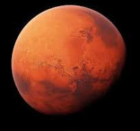 Mars, often referred to as the "Red Planet," is the fourth planet from the Sun and the second smallest planet in the solar system, after Mercury. It is named after the Roman god of war due to its reddish appearance, caused by iron oxide (rust) on its surface.Mars has long captivated human imagination as a potential abode for life beyond Earth. While its surface conditions are harsh compared to Earth's, it shares some similarities, such as a day length and axial tilt similar to Earth's. A Martian day, or sol, is about 24.6 hours long.
The Martian surface is marked by a variety of geological features, including vast plains, towering volcanoes, deep canyons, and impact craters. Olympus Mons, the largest volcano in the solar system, dominates the Martian landscape, standing about 22 kilometers (13.6 miles) tall.
One of the most striking features on Mars is Valles Marineris, a vast canyon system stretching over 4,000 kilometers (2,500 miles) long, making it the largest canyon in the solar system. Mars also boasts the largest known impact crater, Hellas Planitia, which measures about 2,300 kilometers (1,400 miles) in diameter.
Mars has a thin atmosphere composed mostly of carbon dioxide, with traces of nitrogen and argon. Surface temperatures on Mars can vary widely, ranging from highs of about 20 degrees Celsius (68 degrees Fahrenheit) near the equator during the day to lows of about -153 degrees Celsius (-243 degrees Fahrenheit) at the poles.
Numerous missions have explored Mars, including orbiters, landers, and rovers, with the goal of studying its geology, climate, and potential for past or present life. These missions have revealed tantalizing evidence of water ice, ancient riverbeds, and other features that suggest Mars may have once harbored liquid water and possibly even microbial life. Understanding Mars is crucial for unraveling the mysteries of its past and assessing its potential as a future destination for human exploration and colonization.
Jupiter
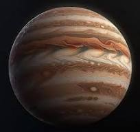 Jupiter, the largest planet in our solar system, is a gas giant located fifth from the Sun. Its immense size—about 11 times the diameter of Earth—earns it the title of "King of the Planets." Jupiter is predominantly composed of hydrogen and helium, similar to the composition of the Sun.One of Jupiter's most iconic features is its Great Red Spot, a giant storm that has been raging for centuries. This massive storm, larger than Earth itself, is characterized by high winds and a distinctive red hue, though its exact cause remains a topic of scientific investigation.
Jupiter has a system of rings, although they are much fainter and less prominent than Saturn's. These rings are composed primarily of dust and small rocks, likely originating from the planet's moons or debris left behind by passing comets.
Jupiter boasts an extensive family of moons, with at least 79 known natural satellites orbiting the planet. The four largest moons—Io, Europa, Ganymede, and Callisto, known as the Galilean moons—were discovered by the astronomer Galileo Galilei in 1610. These moons are diverse in their characteristics, with Io being the most volcanically active body in the solar system, while Europa has a subsurface ocean that may harbor conditions suitable for life.
Jupiter's immense gravitational influence shapes the dynamics of the solar system, protecting inner planets like Earth from potentially hazardous asteroids and comets by deflecting or capturing them with its strong gravitational pull.
NASA's Juno spacecraft, launched in 2011, has been studying Jupiter since its arrival in 2016, providing valuable insights into the planet's atmosphere, magnetic field, and interior structure. Understanding Jupiter is key to unraveling the mysteries of planetary formation and evolution, as well as gaining insights into the processes shaping our solar system and beyond.
Saturn
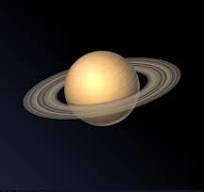 Saturn, the sixth planet from the Sun, is a gas giant known for its stunning ring system, making it one of the most visually striking planets in our solar system. Named after the Roman god of agriculture, Saturn is the second-largest planet, boasting a diameter about nine times that of Earth.Saturn's most notable feature is its extensive ring system, composed of icy particles ranging in size from dust grains to large boulders. These rings are divided into numerous distinct bands, with gaps known as divisions, created by the gravitational influence of Saturn's moons. The rings, which are about 250,000 kilometers (155,000 miles) wide but only a few hundred meters thick, orbit the planet's equator.
Saturn has a diverse family of moons, with at least 82 known natural satellites. Titan, the largest moon, is larger than the planet Mercury and has a thick atmosphere rich in nitrogen, with lakes of liquid methane and ethane on its surface. Enceladus, another of Saturn's moons, is of particular interest to scientists due to its geysers of water vapor erupting from its south pole, suggesting the presence of a subsurface ocean.
Saturn's atmosphere is primarily composed of hydrogen and helium, with traces of other gases such as methane and ammonia. Like Jupiter, Saturn exhibits bands of clouds and large-scale storms, though its weather patterns are less pronounced.
NASA's Cassini spacecraft, which orbited Saturn from 2004 to 2017, provided unprecedented insights into the planet's atmosphere, rings, and moons. Understanding Saturn's unique characteristics and its dynamic ring system is essential for unraveling the processes that shape planetary systems and the diversity of worlds within our solar system and beyond.
Uranus
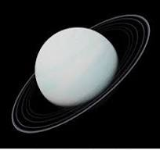 Uranus, the seventh planet from the Sun, is a gas giant often referred to as an "ice giant" due to its composition of icy materials such as water, ammonia, and methane. Discovered in 1781 by the astronomer William Herschel, Uranus is the third-largest planet in the solar system and is unique for its sideways rotation, with its axis of rotation nearly parallel to its orbital plane.Uranus has a pale blue-green appearance due to the presence of methane in its atmosphere, which absorbs red light and reflects blue and green light. Its atmosphere is primarily composed of hydrogen and helium, with traces of methane and other gases. The extreme cold temperatures on Uranus can plummet to as low as -224 degrees Celsius (-371 degrees Fahrenheit), making it one of the coldest planets in the solar system.
The most distinctive feature of Uranus is its unusual rotation, which causes its axis to be tilted at an angle of about 98 degrees relative to its orbit around the Sun. This extreme tilt results in peculiar seasonal variations, with each pole experiencing about 42 years of continuous sunlight followed by 42 years of darkness during its 84-year orbit around the Sun.
Uranus has a system of rings, although they are much fainter and less extensive than those of Saturn. The planet also has a diverse family of moons, with at least 27 known natural satellites. The largest moons, including Titania, Oberon, Umbriel, Ariel, and Miranda, exhibit a variety of geological features, including craters, valleys, and cliffs.
Studying Uranus provides valuable insights into the processes of planetary formation and evolution, as well as the dynamics of icy bodies in the outer solar system. Further exploration of Uranus, including potential future missions, promises to unlock more mysteries about this enigmatic ice giant.
Neptune
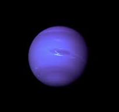 Neptune, the eighth and farthest planet from the Sun in our solar system, is a distant and mysterious ice giant. Discovered in 1846, its existence was predicted by mathematical calculations before it was actually observed. Named after the Roman god of the sea, Neptune's blue color, much like Uranus, comes from the presence of methane in its atmosphere.Neptune is about four times the size of Earth and is composed primarily of hydrogen, helium, and traces of methane. Its atmosphere is marked by powerful winds, with speeds reaching up to 2,100 kilometers per hour (1,300 miles per hour), making them the fastest in the solar system. These winds create distinct cloud features, including bright white clouds of methane ice and darker regions known as "scooter" clouds.
One of Neptune's most intriguing features is its Great Dark Spot, a massive storm system similar to Jupiter's Great Red Spot, although it vanished in the late 1990s. Additionally, Neptune has a series of smaller storms and cloud bands that encircle the planet.
Neptune has a system of faint rings, composed of dust particles and ice fragments. These rings, although not as prominent as those of Saturn, are believed to be relatively young compared to the rings of other gas giants.
Neptune also has a diverse family of moons, with at least 14 known natural satellites. Triton, Neptune's largest moon, is of particular interest due to its retrograde orbit, suggesting that it may have been captured by Neptune's gravity rather than formed in place.
The extreme distance of Neptune from the Sun poses challenges for exploration, but NASA's Voyager 2 spacecraft provided valuable data during its flyby in 1989. Continued study of Neptune, including potential future missions, promises to deepen our understanding of this distant and enigmatic ice giant, shedding light on the mysteries of the outer solar system.